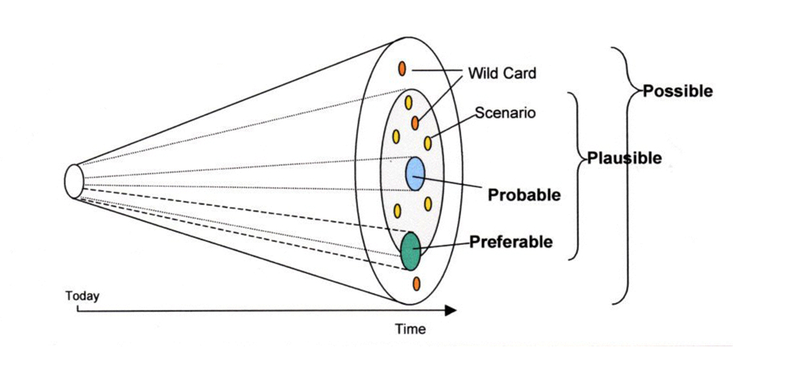
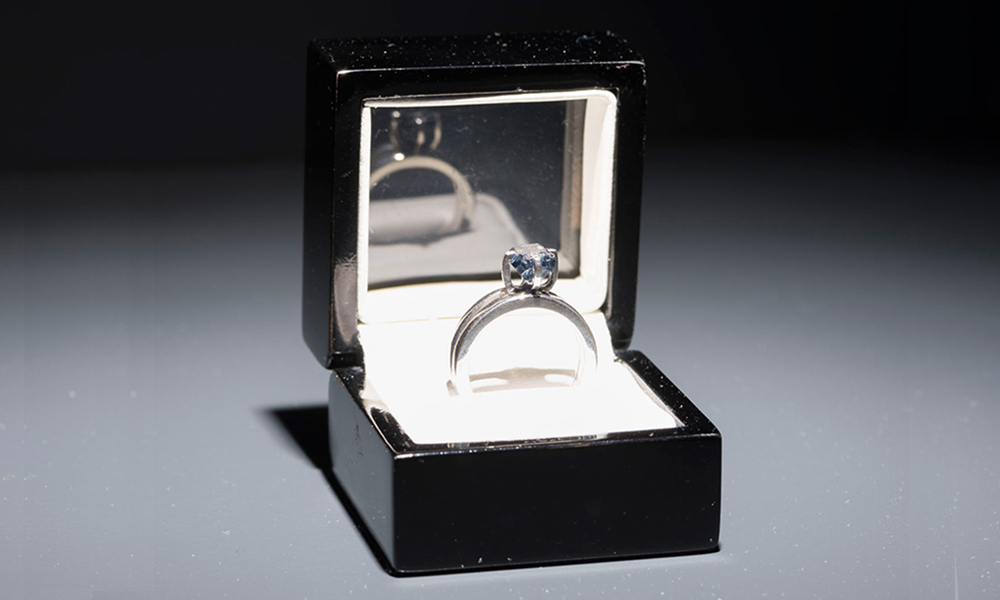
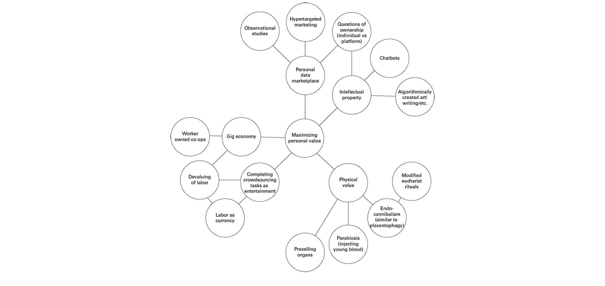
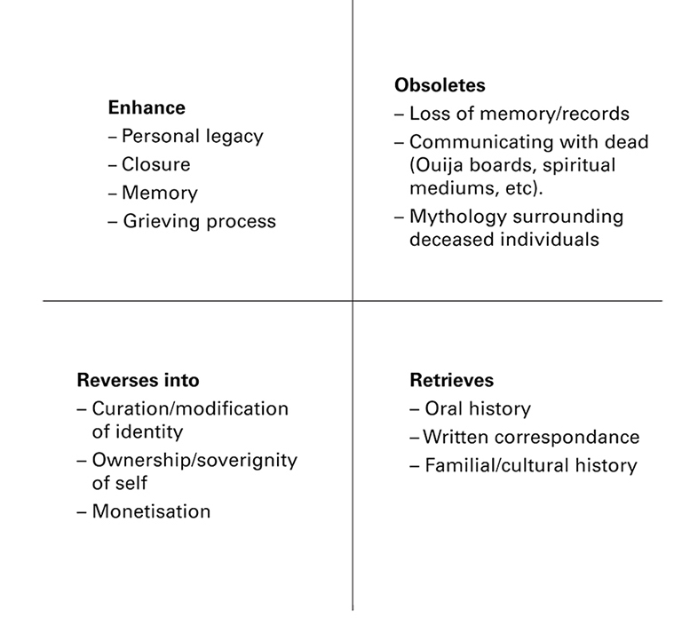
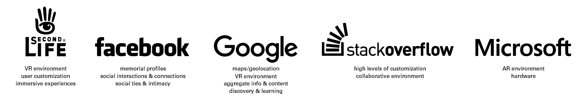
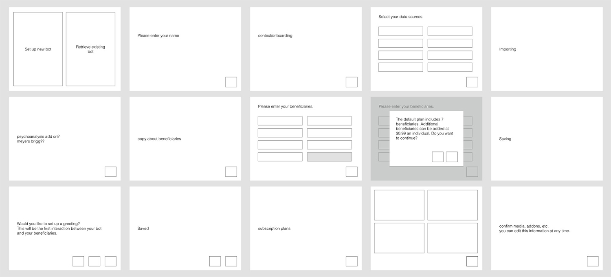
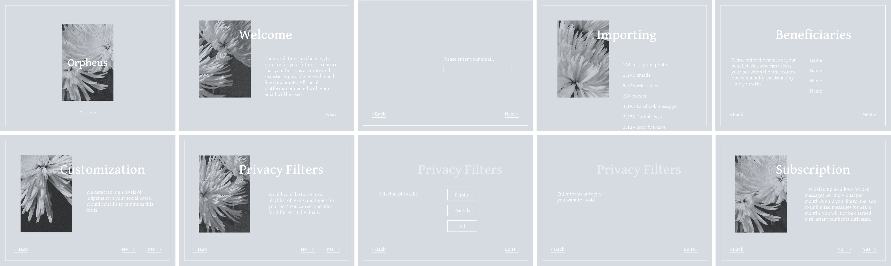
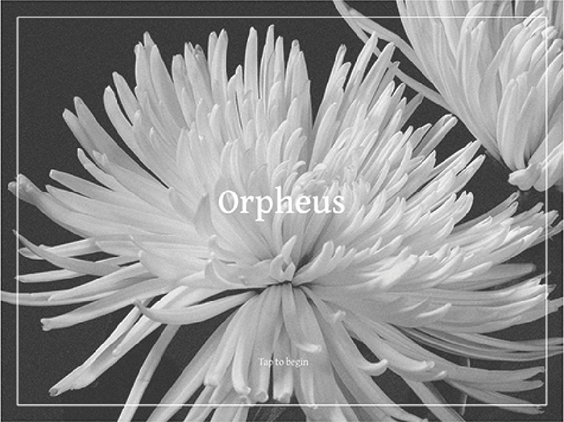
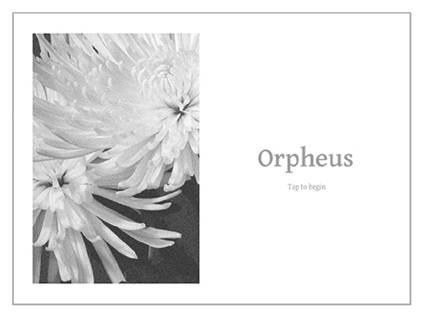

The intersection of death, artificial intelligence, and identity
Orpheus is a speculative postmortem bot company. I designed an touchpoint for new customer onboarding to investigate the implications and potential issues that may arise from the popularization of AI, especially as a form of memorialization.
Exploring Ambiguity
Orpheus began as a response to designers and their role in creating futures that may not necessarily exist. Design is and should not be limited to problem solving but also embrace "problem finding" and "problem worrying." How can designers identify emergent trends, extrapolate them, consider possible consequences, and contemplate the designer's role in said future?

The Futures Cone is a popular visualization of futuring. As one gets further away from "today," the number of possibilities increase. Designers often operate within probable and closer to the narrow of the cone, when sometimes it may be necessary to consider timelines farther out and further away from probable. By designing for these murkier areas, designers can shift what is considered "probable."
Identifying Microfutures
I started with looking at current events, trends, and behaviors. I was intrigued by one particular work by artist Jill Magid. She created a diamond with Mexican architect Luis Barragán's ashes, to exchange for access to his archive, owned privately by a Swiss couple. What intrigued me was the transformation of an individual's physical form and how one can create value despite being deceased; Barragán's body was to be traded for his body of work.

Moving forward, I asked: How might we maximize our potential and continue creating value even after death?
Sideshows
While it's impossible to account for every possible scenario and edge case, it is still valuable for designers to question and understand how a designed artifact can change the context it was originally designed for by considering potential parallel developments, side effects, and countermovements.

Creating a futures wheel speculated on side effects of an obsession with efficiency and value even after death, considering how value can be created through physical body, labor, and intellectual/created property. After choosing to concentrate on postmortem AI or chatbots, the intersection of generated data and intellectual property, Marshall McLuhan’s Laws of Media further fleshed out how new technologies can potentially impact individuals as well as cultural practices.
I also considered existing commercial ventures; how might today’s companies leverage their resources into the postmortem AI space?
Building Orpheus
In order to allow the audience to experience the frictions and awkwardness of postmortem AI, I decided to design an onboarding process, introducing individuals to questions that might arise during the process of creating an AI. Preparing the bot becomes just another step of estate planning. They serve a variety of purposes: to help others with the grieving process, to act as archivists and historians for future generations, or to extend one’s legacy.
As participants interact with the app, I wanted them to consider a variety of questions related to identity and ownership related to technology. Should individuals be able to create a more perfect version of themsleves? Does the AI continue to change and learn from input data from others or is it frozen in time? What version of ourselves should the AI be? Who owns the AI and any related data? If an individual’s family stops paying for the service, do they disappear?
The idea of becoming a bot is already quite overwhelming and I did not want the visual language to further intimidate users. Flowers were used for the branding as they are often present at funerals of various cultures and denominations and can symbolize life and celebration.
A light palette was originally chosen to relieve the anxiety of having to confront one’s mortality, but it felt flighty. Ultimately, I settled on the black and white visuals to minimize distraction.
 